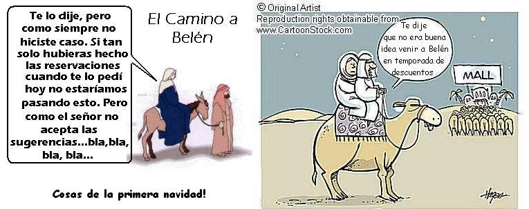
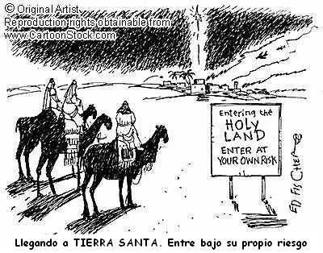
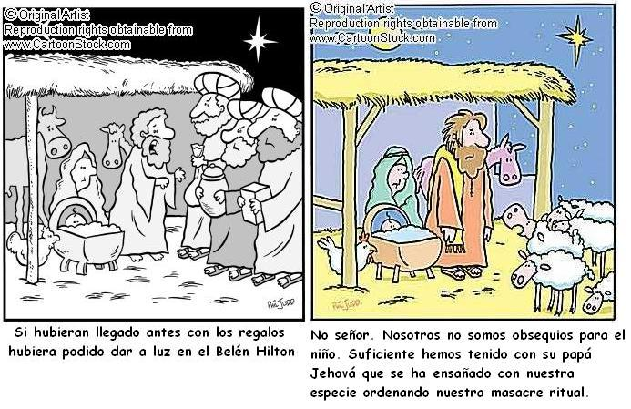
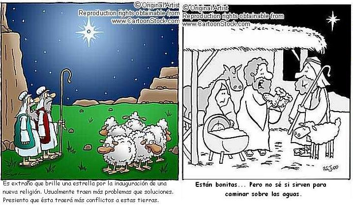
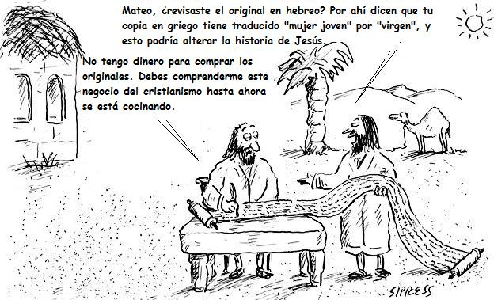
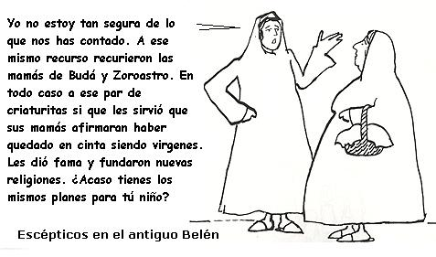

Llegan las fiestas de fin de año, las novenas, el pesebre y la historia de navidad.
Todo empezó cuando el ángel Gabriel le avisó a María que el Espirítu Santo vendría sobre ella. Según la historia ella aceptó, lo que no nos dice la historia es como la cubrió el Espiritu Santo ni sobre como José empezó a sospechar que algo andaba mal con María. He aquí una aproximación:

Todos imaginamos que el largo camino hasta Belén fue plácido y calmado, pero los caricaturistas tienen otra idea:
Ya una vez allí tuvieron que conformarse con un establo, porque José no hizo reservaciones
Otros personajes simpáticos de la historia de navidad son los Reyes Magos, esos sabios bonachones que llevan los regalos a los niños españoles, porque Papá Noel perdió la licitación para ello. Por esto el gordo de rojo se dedica más hacía Norteamérica y el norte de Europa. Y como la mayoría de las casas del trópico no tienen chimeneas y no es lugar apto para los renos, el niño Dios se encarga de repartir los regalos en gran parte de Latinoamérica.
Veamos como empezó el periplo de los Reyes Magos:


Lo que la historia sagrada no nos cuenta es que José no quedó muy a gusto con los regalos
Otros personajes de esta cándida historia son los pastores de Belén. Que a diferencia de lo dicho por la Biblia mostraron su resquemor por la llegada de una nuev religión a la Tierra:
Claro, lo que sabemos de la historia de la navidad nos ha llegado por lo que escribieron los evangelistas. Principalmente por los autores de Mateo y Lucas. Aunque el tiempo habría de desenmascarar una de las tantas trampas que hizo el autor del evangelio de Mateo:
Otro personaje de la navidad es San Nicolás o Papá Noel, parece que él ha tenido mucho que ver con Jesús en diferentes momentos de su vida.

Muchos dicen que el escepticismo es reciente. Pero es muy probable que en tiempos de Jesús ya hubiesen racionalistas.
Con errores o sin errores en la narración de Mateo tenemos pocos datos de la vida del niño Jesús. He aquí una aproximación:


Aunque la navidad es una buena época para casi todos -especielmente para los vendedores- no olvidemos a aquellos que sufren por esta temporada:

En fin, es estos tiempos que Occidente es más pluralista tenemos una gran cantidad de festividades cercanas a tiempos de navidad. Tenemos Kwanza para muchos afroamericanos, y Hanukkah para los judíos. De hecho la navidad fue tomada prestada del solsticio de invierno, así que también Feliz solsticio de invierno!. Y nosotros los incrédulos nos sumaremos a los buenos deseos aunque sin tanta mitología establecida.
Volver a la sección Humor
Comentarios
Comments powered by Disqus